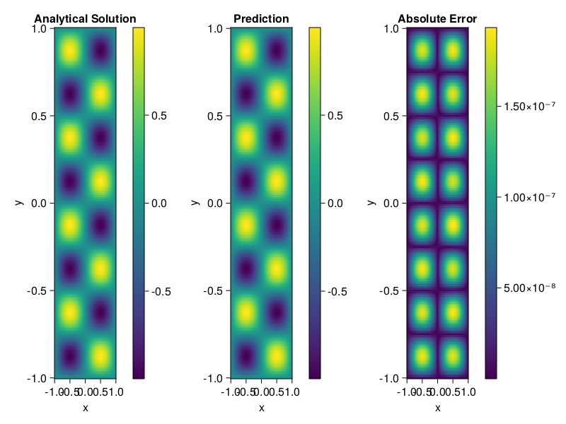

Helmholtz equation
Let us consider the Helmholtz equation in two space dimensions
\[\begin{aligned} &\Delta u(x, y)+k^{2} u(x, y)=q(x, y), \quad(x, y) \in \Omega:=(-1,1)^2 \\ &u(x, y)=0, \quad(x, y) \in \partial \Omega \end{aligned}\]
where
\[q(x, y)=-\left(a_{1} \pi\right)^{2} \sin \left(a_{1} \pi x\right) \sin \left(a_{2} \pi y\right)-\left(a_{2} \pi\right)^{2} \sin \left(a_{1} \pi x\right) \sin \left(a_{2} \pi y\right)+k^{2} \sin \left(a_{1} \pi x\right) \sin \left(a_{2} \pi y\right).\]
The excat solution is $u(x,y)=\sin{a_1\pi x}\sin{a_2\pi y}$. We chose $k=1, a_1 = 1$ and $a_2 = 4$.
using ModelingToolkit, IntervalSets, Sophon, Lux
using Optimization, OptimizationOptimJL
@parameters x,y
@variables u(..)
Dxx = Differential(x)^2
Dyy = Differential(y)^2
a1 = 1
a2 = 4
k = 1
q(x,y) = -(a1*π)^2 * sin(a1*π*x) * sin(a2*π*y) - (a2*π)^2 * sin(a1*π*x) * sin(a2*π*y) + k^2 * sin(a1*π*x) * sin(a2*π*y)
eq = Dxx(u(x,y)) + Dyy(u(x,y)) + k^2 * u(x,y) ~ q(x,y)
domains = [x ∈ Interval(-1,1), y ∈ Interval(-1,1)]
bcs = [u(-1,y) ~ 0, u(1,y) ~ 0, u(x, -1) ~ 0, u(x, 1) ~ 0]
@named helmholtz = PDESystem(eq, bcs, domains, [x,y], [u(x,y)])\[ \begin{align} \frac{\mathrm{d}}{\mathrm{d}y} \frac{\mathrm{d}}{\mathrm{d}y} u\left( x, y \right) + \frac{\mathrm{d}}{\mathrm{d}x} \frac{\mathrm{d}}{\mathrm{d}x} u\left( x, y \right) + u\left( x, y \right) =& - 166.78 \sin\left( 3.1416 x \right) \sin\left( 12.566 y \right) \end{align} \]
Note that the boundary conditions are compatible with periocity, which allows us to apply BACON.
chain = BACON(2, 1, 5, 2; hidden_dims = 32, num_layers=5)
pinn = PINN(chain) # call `gpu` on it if you want to use gpu
sampler = QuasiRandomSampler(300, 100)
strategy = NonAdaptiveTraining()
prob = Sophon.discretize(helmholtz, pinn, sampler, strategy)
@time res = Optimization.solve(prob, BFGS(); maxiters=1000)u: ComponentVector{Float64}(filters = (filter_1 = (bias = [-0.6081464262939443; 0.4877541031692185; … ; 0.1521047769010843; 0.14560012287156168;;]), filter_2 = (bias = [0.5702780755083126; 0.611094092598504; … ; -0.031028151855072822; -0.7861038650731321;;]), filter_3 = (bias = [-0.5451912663510569; -0.19105379067222472; … ; 1.1067945942551987; -0.45166904224569254;;]), filter_4 = (bias = [0.32645375380739966; -0.11525375932311972; … ; 0.6066188684651888; -0.5646831313416494;;]), filter_5 = (bias = [0.4680318496627075; 0.4283104489921778; … ; 0.8999473817540752; -0.8803817599474977;;])), linear_layers = (layer_1 = (weight = [0.33034371480245145 -0.14684406283767143 … -0.10120796722731104 0.14062238865017979; -0.2685437674185917 0.09599596607608957 … -0.024035407587215063 -0.08204215807380157; … ; -0.24211955450666053 -0.26872376111069085 … -0.29333926195596194 0.016243067537756808; 0.25197207183456555 0.15520894427252652 … 0.3360141867727376 -0.15568565652110933], bias = [-0.02251782138586602; -0.002324412583501399; … ; 0.07198675258068482; -0.007326091340087199;;]), layer_2 = (weight = [-0.28426409320462803 -0.12751669677155597 … 0.3715291365895365 -0.3585554742583761; -0.29911174411154423 0.2560087325593916 … -0.25113778020864586 0.3772040796993438; … ; 0.2900775871978515 -0.38436746067998445 … 0.12799399288561022 0.375247807766353; 0.31309335575482006 -0.39602553662882084 … -0.029596075496869552 0.28439846976652966], bias = [0.017363008820515734; 0.02513337328937433; … ; 0.033013057179696055; -0.02923838696283754;;]), layer_3 = (weight = [-0.11257839106476712 0.19217716724111894 … -0.3079106231754083 0.024963406355753035; 0.2841981253518204 -0.12776418503356968 … -0.12585181369697881 0.3854940118957264; … ; -0.20569844673598744 0.011325858876221426 … 0.011315235602405592 -0.12833299006329932; -0.25216405873699915 -0.28544255180467304 … -0.23116523404827227 0.40175637930875135], bias = [-0.014380858235470475; -0.013305334345353916; … ; -0.03892767558209677; 0.04208794046395177;;]), layer_4 = (weight = [0.37210105668035 -0.09114717584852206 … 0.20877037198279255 -0.05339163945749772; 0.2389866836762792 -0.40213461769208875 … 0.18516959931379326 0.3790047159422422; … ; 0.14388917666265466 -0.0532723878404817 … 0.11520534015086906 -0.016258975040339126; 0.061222536053181745 -0.3413053707238162 … -0.10063163964524253 -0.3424256857518356], bias = [-0.0005459084872960144; 0.005076283829073341; … ; 0.0029873514522541908; 0.00033711501127798904;;])), output_layer = (weight = [0.07352998699086546 0.08877411905671602 … -0.16129294650577355 -0.35650756222455665], bias = [-0.055539948809460636;;]))Let's plot the result.
phi = pinn.phi
xs, ys= [infimum(d.domain):0.01:supremum(d.domain) for d in domains]
u_analytic(x,y) = sinpi(a1*x)*sinpi(a2*y)
u_real = [u_analytic(x,y) for x in xs, y in ys]
phi_cpu = cpu(phi) # in case you are using GPU
ps_cpu = cpu(res.u)
u_pred = [sum(phi_cpu(([x,y]), ps_cpu)) for x in xs, y in ys]
using CairoMakie
axis = (xlabel="x", ylabel="y", title="Analytical Solution")
fig, ax1, hm1 = heatmap(xs, ys, u_real, axis=axis)
Colorbar(fig[:, end+1], hm1)
ax2, hm2= heatmap(fig[1, end+1], xs, ys, u_pred, axis= merge(axis, (;title = "Prediction")))
Colorbar(fig[:, end+1], hm2)
ax3, hm3 = heatmap(fig[1, end+1], xs, ys, abs.(u_pred-u_real), axis= merge(axis, (;title = "Absolute Error")))
Colorbar(fig[:, end+1], hm3)
fig